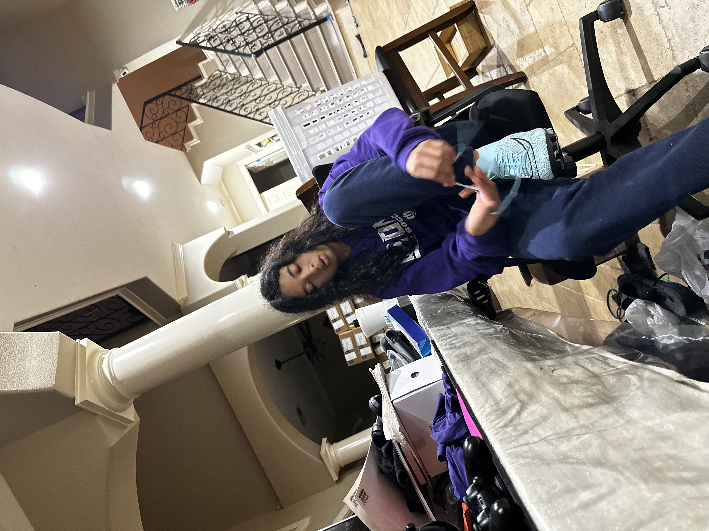

Kharisma is the youngest out of all of us. She often gets special treatment but it is all okay, because I love her for that.
Kharisma is a very similar but dissimilar person from me, she likes a lot of the same music, and she plays in percussion, much like I did. I know that she was the favorite child, but she is my sister and she is a very kind soul. She is very sweet to people that she meets and she does not put our name to shame and I really appreciate that of her. She plays soccer and her record is scoring 9 goals in ONE DAY.